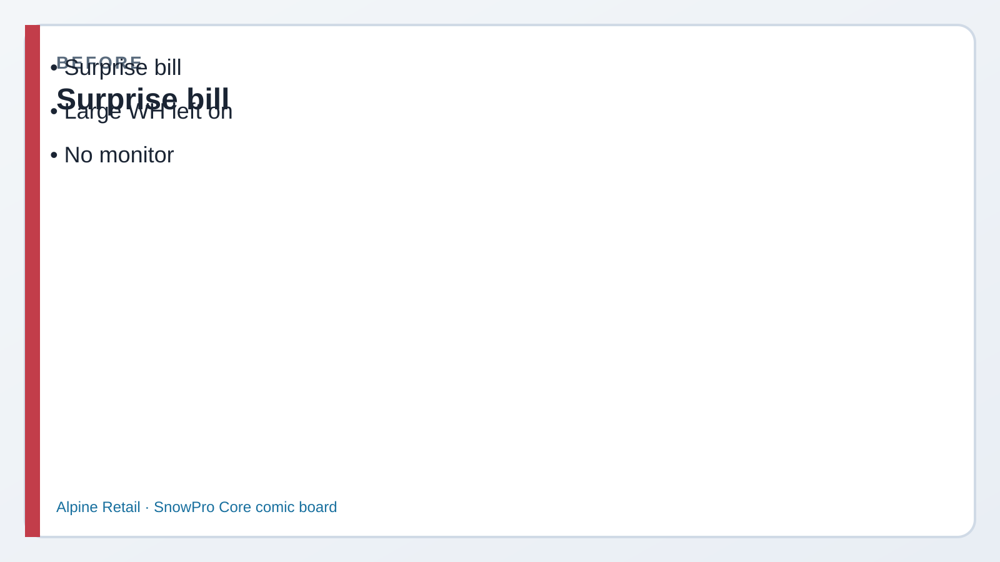
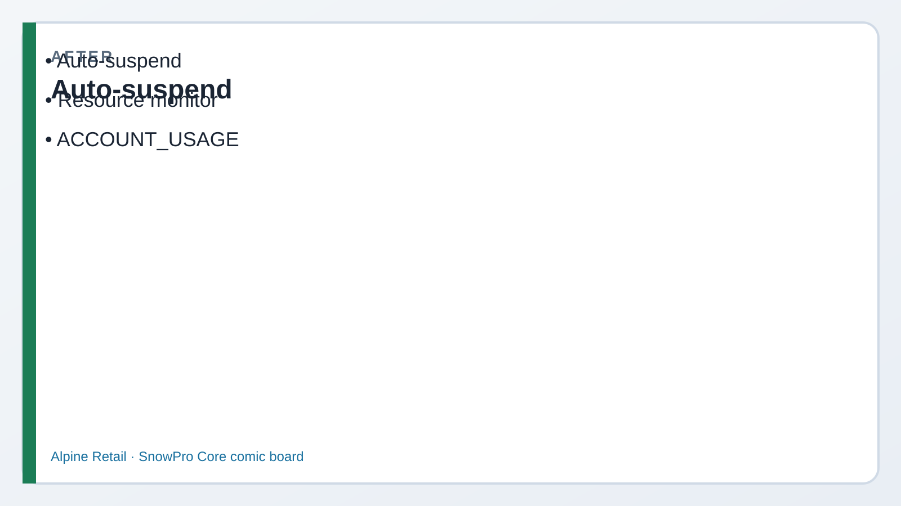

Read every Teach first section before you copy SQL.
Warehouses burn credits while running. Resource monitors are the spending alarm.
ACCOUNT_USAGE tells the story — with a lag the exam loves to ask about.
1
Picture first. Look at BEFORE/AFTER → read the comic → then run tiny SQL.
If a paragraph feels heavy, skip to the next comic strip — Dev explains it out loud for you.
Business problem
Morgan saw last month’s bill spike after someone left a Medium warehouse running overnight.
“I want a quota, a warning, and a hard stop — before Finance calls me.”
Solution you will build
Resource monitor RM_ALPINE_LAB (notify 50/75, suspend at 100),
attached to WH_CORE_XS (and WH_CORE_M).
Credit math XS vs M · sample WAREHOUSE_METERING_HISTORY + QUERY_HISTORY.

Before Surprise credit bill.

After Auto-suspend + resource monitor.
Episode 09 · Start here
Morgan holds the invoice. Dev draws a fuse.
MorganManager
Auto-suspend helps when we remember to use a small WH. I still need a fuse that trips when we blow the monthly credit budget.
DevCoach
Auto-suspend = turns the engine off when idle. Resource monitor = credit quota with NOTIFY / SUSPEND triggers. Different dials — exam will mix them up.
Suspend idle ≠ monitor quota. You usually want both.
See it — cost controls
Idle
Auto-suspend
Warehouse stops after N seconds of no queries — stops idle compute credits.
AUTO_SUSPEND = 60 on WH_CORE_XS
Budget
Resource monitor
Tracks credits used toward a quota. At thresholds: email NOTIFY or SUSPEND the WH.
While running, each size step ~doubles credits/hour. Medium ≈ 4× X-Small.
XS ≈ 1 credit/hr M ≈ 4 credits/hr
Lag
ACCOUNT_USAGE delay
Metering and query history views can lag (often ~45 min–3 hr). Empty result ≠ “free.”
Ran query now → row may appear later
Monitor lifecycle
1 · CreateRM_ALPINE_LABquota + triggers
2 · AttachALTER WAREHOUSESET RESOURCE_MONITOR
3 · BurnQueries runcredits accumulate
4 · TripNOTIFY / SUSPENDat thresholds
Before Step 1
Kai: “What happens at 100%?”
KaiAnalyst
If the monitor says SUSPEND at 100%, do my tables get deleted?
DevCoach
No — storage stays. The warehouse suspends so new queries can’t burn more compute on that WH until the monitor resets / you raise quota.
1 Create the resource monitor
What this does: Sets a 20-credit monthly lab quota. Emails at 50% and 75%; suspends warehouses on the monitor at 100%.
SQL · create monitor (ACCOUNTADMIN)
USE ROLE ACCOUNTADMIN;
CREATE OR REPLACE RESOURCE MONITOR RM_ALPINE_LAB
WITH CREDIT_QUOTA = 20
FREQUENCY = MONTHLY
START_TIMESTAMP = IMMEDIATELY
TRIGGERS
ON 50 PERCENT DO NOTIFY
ON 75 PERCENT DO NOTIFY
ON 100 PERCENT DO SUSPEND;
SHOW RESOURCE MONITORS LIKE 'RM_ALPINE%';
✓ Monitor listed with 20-credit quota
2 Attach to warehouses
What this does: Hooks daily XS (and demo M) so their compute credits count toward the quota.
SQL · attach
ALTER WAREHOUSE WH_CORE_XS
SET RESOURCE_MONITOR = RM_ALPINE_LAB;
ALTER WAREHOUSE WH_CORE_M
SET RESOURCE_MONITOR = RM_ALPINE_LAB;
SHOW WAREHOUSES LIKE 'WH_CORE%';
✓ Both WH show the resource monitor name
Before Step 3
Riley sizes up “just for speed”
RileyPeer engineer
I’ll run the board deck on Medium all day. Four times the credits is fine, right?
MorganManager
Four times while it’s running. Scale up for the heavy query, then back to XS. Monitor still trips if you forget.
3 Credit math — say the numbers
What this does: Locks the relative burn rates. No SQL required — exam arithmetic.
XS
~1 credit / hour running
Default lab size. Prefer this for daily work.
1 hour XS ≈ 1 credit
M
~4 credits / hour running
Same hour on Medium ≈ four XS hours.
1 hour M ≈ 4 credits
✓ You can compare XS vs M without notes
4 WAREHOUSE_METERING_HISTORY (lag OK)
What this does: Reads credit burn from ACCOUNT_USAGE. Empty results are common right after activity — wait for lag.
SQL · metering
USE ROLE ACCOUNTADMIN;
SELECT START_TIME, WAREHOUSE_NAME,
CREDITS_USED, CREDITS_USED_COMPUTE
FROM SNOWFLAKE.ACCOUNT_USAGE.WAREHOUSE_METERING_HISTORY
WHERE WAREHOUSE_NAME IN ('WH_CORE_XS', 'WH_CORE_M')
AND START_TIME >= DATEADD(day, -7, CURRENT_TIMESTAMP())
ORDER BY START_TIME DESC
LIMIT 20;
Lag warning
ACCOUNT_USAGE is not real-time. Trial “free” credits still appear here eventually.
Prod: same views power chargeback — don’t promise instant dashboards without noting lag.
✓ Query runs (rows may be empty until lag catches up)
5 QUERY_HISTORY sample
What this does: Shows recent statements — who, which WH, how long. Pair with metering when hunting a spike.
SQL · query history
SELECT START_TIME, USER_NAME, WAREHOUSE_NAME,
TOTAL_ELAPSED_TIME,
LEFT(QUERY_TEXT, 60) AS QUERY_START
FROM SNOWFLAKE.ACCOUNT_USAGE.QUERY_HISTORY
WHERE START_TIME >= DATEADD(day, -1, CURRENT_TIMESTAMP())
ORDER BY START_TIME DESC
LIMIT 15;
Near-real-time alternative for your session: INFORMATION_SCHEMA.QUERY_HISTORY_BY_SESSION() (see SQL file).
✓ You know where to look after a cost spike
Exam presses further — say these out loud
Basics attached the fuse. Cover each answer before you open it.
Q1. Auto-suspend vs resource monitor — which problem does each solve?
Say: Auto-suspend stops idle warehouse compute. Resource monitor enforces a credit quota with NOTIFY/SUSPEND triggers. Idle waste ≠ over-budget active querying — use both.
Q2. What happens at 100% with DO SUSPEND?
Say: Warehouses assigned to that monitor suspend; new queries on them fail until quota resets or you change the monitor. Tables/data are not deleted.
Q3. Are cloud services credits the same as warehouse credits?
Say: No. Cloud Services (auth, metadata, optimizer work) meters separately. Often partially offset daily, but exam answer: not identical to WH compute credits.
Q4. Trial vs prod FinOps honesty?
Say: Trial free credits hide pain; prod needs monitors, sized WHs, and ACCOUNT_USAGE chargeback. Lag still applies in prod — design alerts accordingly.
Q5. Why might WAREHOUSE_METERING_HISTORY be empty right after you queried?
Say: ACCOUNT_USAGE latency. Wait and re-query, or use nearer Information Schema history for recent session activity. Empty ≠ proof of zero cost.
Priya’s wrap-up (say this out loud)
“Morgan wanted a spending fuse. I created RM_ALPINE_LAB with notify at 50/75 and suspend at 100, attached it to WH_CORE_XS and WH_CORE_M,
and reviewed credit math — Medium burns about four times X-Small while running. ACCOUNT_USAGE metering and query history show the trail after a lag.
Outcome: budget alarm on the lab engines, Domain 2 cost topic covered.”
Next
Lab 10 — stages, file formats, COPY INTO (Domain 3 loading).